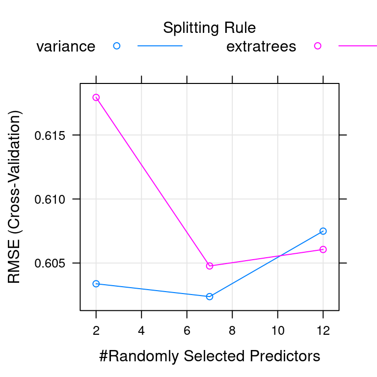
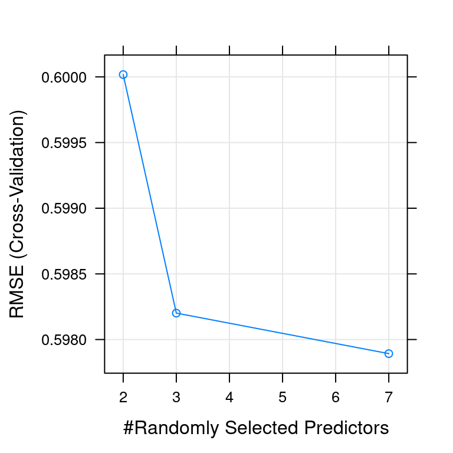

Chapter 4 Tuning model parameters to improve performance
In this chapter, you will use the train() function to tweak model parameters through cross-validation and grid search.
Random forests and wine video
Random forests vs. linear models
What’s the primary advantage of random forests over linear models?
They make you sound cooler during job interviews.
You can’t understand what’s going on inside of a random forest model, so you don’t have to explain it to anyone.
A random forest is a more flexible model than a linear model, but just as easy to fit.
4.1 Fit a random forest
As you saw in the video, random forest models are much more flexible than linear models, and can model complicated nonlinear effects as well as automatically capture interactions between variables. They tend to give very good results on real world data, so let’s try one out on the wine quality dataset, where the goal is to predict the human-evaluated quality of a batch of wine, given some of the machine-measured chemical and physical properties of that batch.
Fitting a random forest model is exactly the same as fitting a generalized linear regression model, as you did in the previous chapter. You simply change the method argument in the train function to be "ranger". The ranger package written by Wright, Wager, and Probst (2020) is a rewrite of R’s classic randomForest package written by Breiman et al. (2018) and fits models much faster, but gives almost exactly the same results. We suggest that all beginners use the ranger package for random forest modeling.
Exercise
Train a random forest called
modelon the wine quality dataset,wine, such thatqualityis the response variable and all other variables are explanatory variables. Data is available from https://archive.ics.uci.edu/ml/machine-learning-databases/wine-quality/.Use
method = "ranger".Use a
tuneLengthof 1.Use 5 CV folds.
Print
modelto the console.
library(caret)
# Load wine data set
wine <- read.csv("./Data/wine_dataset.csv")
set.seed(42)
# Fit random forest: model
model <- train(
quality ~.,
tuneLength = 1,
data = wine,
method = "ranger",
trControl = trainControl(method = "cv",
number = 5,
verboseIter = FALSE)
)
# Print model to console
modelRandom Forest
6497 samples
12 predictor
No pre-processing
Resampling: Cross-Validated (5 fold)
Summary of sample sizes: 5197, 5198, 5199, 5198, 5196
Resampling results across tuning parameters:
splitrule RMSE Rsquared MAE
variance 0.5997036 0.5373856 0.4354244
extratrees 0.6099071 0.5312587 0.4552435
Tuning parameter 'mtry' was held constant at a value of 3
Tuning
parameter 'min.node.size' was held constant at a value of 5
RMSE was used to select the optimal model using the smallest value.
The final values used for the model were mtry = 3, splitrule = variance
and min.node.size = 5.Ranger result
Call:
ranger::ranger(dependent.variable.name = ".outcome", data = x, mtry = min(param$mtry, ncol(x)), min.node.size = param$min.node.size, splitrule = as.character(param$splitrule), write.forest = TRUE, probability = classProbs, ...)
Type: Regression
Number of trees: 500
Sample size: 6497
Number of independent variables: 12
Mtry: 3
Target node size: 5
Variable importance mode: none
Splitrule: variance
OOB prediction error (MSE): 0.3380852
R squared (OOB): 0.5566531 Explore a wider model space video
Advantage of a longer tune length
What’s the advantage of a longer tuneLength?
You explore more potential models and can potentially find a better model.
Your models take less time to fit.
There’s no advantage; you’ll always end up with the same final model.
4.2 Try a longer tune length
Recall from the video that random forest models have a primary tuning parameter of mtry, which controls how many variables are exposed to the splitting search routine at each split. For example, suppose that a tree has a total of 10 splits and mtry = 2. This means that there are 10 samples of 2 predictors each time a split is evaluated.
Use a larger tuning grid this time, but stick to the defaults provided by the train() function. Try a tuneLength of 3, rather than 1, to explore some more potential models, and plot the resulting model using the plot function.
Exercise
Train a random forest model,
model, using thewinedataset on thequalityvariable with all other variables as explanatory variables. (This will take a few seconds to run, so be patient!)Use
method = "ranger".Use a
tuneLengthof 3.Use 5 CV folds.
Print
modelto the console.Plot the
modelafter fitting it.
# Fit random forest: model
model <- train(
quality ~ .,
tuneLength = 3,
data = wine, method = "ranger",
trControl = trainControl(method = "cv", number = 5, verboseIter = FALSE)
)
# Print model to console
print(model)Random Forest
6497 samples
12 predictor
No pre-processing
Resampling: Cross-Validated (5 fold)
Summary of sample sizes: 5197, 5197, 5199, 5197, 5198
Resampling results across tuning parameters:
mtry splitrule RMSE Rsquared MAE
2 variance 0.6033807 0.5347376 0.4404720
2 extratrees 0.6179357 0.5247112 0.4648299
7 variance 0.6023769 0.5291688 0.4335351
7 extratrees 0.6047707 0.5306300 0.4446016
12 variance 0.6074915 0.5193554 0.4354236
12 extratrees 0.6060593 0.5253553 0.4421185
Tuning parameter 'min.node.size' was held constant at a value of 5
RMSE was used to select the optimal model using the smallest value.
The final values used for the model were mtry = 7, splitrule = variance
and min.node.size = 5.
Custom tuning grids video
Advantages of a custom tuning grid
Why use a custom tuneGrid?
There’s no advantage; you’ll always end up with the same final model.
It gives you more fine-grained control over the tuning parameters that are explored.
It always makes your models run faster.
4.3 Fit a random forest with custom tuning
Now that you’ve explored the default tuning grids provided by the train() function, let’s customize your models a bit more.
You can provide any number of values for mtry, from 2 up to the number of columns in the dataset. In practice, there are diminishing returns for much larger values of mtry, so you will use a custom tuning grid that explores 2 simple models (mtry = 2 and mtry = 3) as well as one more complicated model (mtry = 7).
Exercise
Define a custom tuning grid.
Set the number of variables to possibly split at each node,
.mtry, to a vector of 2, 3, and 7.Set the rule to split on,
.splitrule, to"variance".Set the minimum node size,
.min.node.size, to 5.
Train another random forest model,
model, using thewinedataset on thequalityvariable with all other variables as explanatory variables.+ Use `method = "ranger"`. + Use the custom `tuneGrid`. + Use 5 CV folds.
# Define the tuning grid: tuneGrid
tuneGrid <- data.frame(
.mtry = c(2, 3, 7),
.splitrule = "variance",
.min.node.size = 5
)
# Fit random forest: model
model <- train(
quality ~ .,
tuneGrid = tuneGrid,
data = wine,
method = "ranger",
trControl = trainControl(method = "cv",
number = 5,
verboseIter = FALSE)
)- Print
modelto the console.
Random Forest
6497 samples
12 predictor
No pre-processing
Resampling: Cross-Validated (5 fold)
Summary of sample sizes: 5199, 5197, 5198, 5196, 5198
Resampling results across tuning parameters:
mtry RMSE Rsquared MAE
2 0.6000174 0.5400401 0.4378588
3 0.5982012 0.5396038 0.4337916
7 0.5978926 0.5360262 0.4305718
Tuning parameter 'splitrule' was held constant at a value of variance
Tuning parameter 'min.node.size' was held constant at a value of 5
RMSE was used to select the optimal model using the smallest value.
The final values used for the model were mtry = 7, splitrule = variance
and min.node.size = 5.- Plot the
modelafter fitting it usingplot().

Introducing glmnet video
Advantage of glmnet
What’s the advantage of glmnet over regular glm models?
glmnetmodels automatically find interaction variables.glmnetmodels don’t provide p-values or confidence intervals on predictions.glmnetmodels place constraints on your coefficients, which helps prevent overfitting.
4.4 Make a custom trainControl
The wine quality dataset was a regression problem, but now you are looking at a classification problem. This is a simulated dataset based on the “don’t overfit” competition on Kaggle a number of years ago.
Classification problems are a little more complicated than regression problems because you have to provide a custom summaryFunction to the train() function to use the AUC metric to rank your models. Start by making a custom trainControl, as you did in the previous chapter. Be sure to set classProbs = TRUE, otherwise the twoClassSummary for summaryFunction will break.
Exercise
Make a custom trainControl called myControl for classification using the trainControl function.
Use 10 CV folds.
Use
twoClassSummaryfor thesummaryFunction.Be sure to set
classProbs = TRUE.
# Create custom trainControl: myControl
myControl <- trainControl(
method = "cv",
number = 10,
summaryFunction = twoClassSummary,
classProbs = TRUE, # IMPORTANT!
verboseIter = FALSE
)4.5 Fit glmnet with custom trainControl
Now that you have a custom trainControl object, fit a glmnet model to the “don’t overfit” dataset. Recall from the video that glmnet is an extension of the generalized linear regression model (or glm) that places constraints on the magnitude of the coefficients to prevent overfitting. This is more commonly known as “penalized” regression modeling and is a very useful technique on datasets with many predictors and few values.
glmnet is capable of fitting two different kinds of penalized models, controlled by the alpha parameter:
Ridge regression (or
alpha = 0)Lasso regression (or
alpha = 1)
You’ll now fit a glmnet model to the “don’t overfit” dataset using the defaults provided by the caret package.
Exercise
Train a glmnet model called model on the overfit data. Use the custom trainControl from the previous exercise (myControl). The variable y is the response variable and all other variables are explanatory variables.
overfit <- read.csv("https://assets.datacamp.com/production/course_1048/datasets/overfit.csv")
model <- train(y ~ .,
data = overfit,
method = "glmnet",
trControl = myControl)Warning in train.default(x, y, weights = w, ...): The metric "Accuracy" was not
in the result set. ROC will be used instead.- Print the
modelto the console.
glmnet
250 samples
200 predictors
2 classes: 'class1', 'class2'
No pre-processing
Resampling: Cross-Validated (10 fold)
Summary of sample sizes: 225, 225, 226, 225, 224, 224, ...
Resampling results across tuning parameters:
alpha lambda ROC Sens Spec
0.10 0.0001012745 0.4485507 0.05 0.9659420
0.10 0.0010127448 0.4402174 0.05 0.9746377
0.10 0.0101274483 0.4617754 0.00 0.9871377
0.55 0.0001012745 0.4319746 0.05 0.9532609
0.55 0.0010127448 0.4403080 0.05 0.9657609
0.55 0.0101274483 0.4725543 0.05 0.9873188
1.00 0.0001012745 0.3996377 0.05 0.9230072
1.00 0.0010127448 0.3865036 0.05 0.9489130
1.00 0.0101274483 0.4312500 0.05 0.9873188
ROC was used to select the optimal model using the largest value.
The final values used for the model were alpha = 0.55 and lambda = 0.01012745.- Use the
max()function to find the maximum of the ROC statistic contained somewhere inmodel[["results"]].
[1] 0.4725543glmnet with custom tuning grid video
Why a custom tuning grid?
Why use a custom tuning grid for a glmnet model?
There’s no reason to use a custom grid; the default is always the best.
The default tuning grid is very small and there are many more potential
glmnetmodels you want to explore.glmnetmodels are really slow, so you should never try more than a few tuning parameters.
4.6 glmnet with custom trainControl and tuning
As you saw in the video, the glmnet model actually fits many models at once (one of the great things about the package). You can exploit this by passing a large number of lambda values, which control the amount of penalization in the model. train() is smart enough to only fit one model per alpha value and pass all of the lambda values at once for simultaneous fitting.
My favorite tuning grid for glmnet models is:
This grid explores a large number of lambda values (100, in fact), from a very small one to a very large one. (You could increase the maximum lambda to 10, but in this exercise 1 is a good upper bound.)
If you want to explore fewer models, you can use a shorter lambda sequence. For example, lambda = seq(0.0001, 1, length = 10) would fit 10 models per value of alpha.
You also look at the two forms of penalized models with this tuneGrid: ridge regression and lasso regression. alpha = 0 is pure ridge regression, and alpha = 1 is pure lasso regression. You can fit a mixture of the two models (i.e. an elastic net) using an alpha between 0 and 1. For example, alpha = .05 would be 95% ridge regression and 5% lasso regression.
In this problem you’ll just explore the 2 extremes–pure ridge and pure lasso regression–for the purpose of illustrating their differences.
Exercise
- Train a
glmnetmodel on theoverfitdata such thatyis the response variable and all other variables are explanatory variables. Make sure to use your customtrainControlfrom the previous exercise (myControl). Also, use a customtuneGridto explorealpha = 0:1and 20 values oflambdabetween 0.0001 and 1 per value ofalpha.
# Train glmnet with custom trainControl and tuning: model
model <- train(
y ~ ., data = overfit,
tuneGrid = expand.grid(alpha = 0:1,
lambda = seq(0.0001, 1, length = 20)),
method = "glmnet",
trControl = myControl
)Warning in train.default(x, y, weights = w, ...): The metric "Accuracy" was not
in the result set. ROC will be used instead.- Print
modelto the console.
glmnet
250 samples
200 predictors
2 classes: 'class1', 'class2'
No pre-processing
Resampling: Cross-Validated (10 fold)
Summary of sample sizes: 226, 226, 224, 225, 224, 224, ...
Resampling results across tuning parameters:
alpha lambda ROC Sens Spec
0 0.00010000 0.4343297 0.05 0.9786232
0 0.05272632 0.4539855 0.00 0.9958333
0 0.10535263 0.4565217 0.00 1.0000000
0 0.15797895 0.4501812 0.00 1.0000000
0 0.21060526 0.4543478 0.00 1.0000000
0 0.26323158 0.4587862 0.00 1.0000000
0 0.31585789 0.4566123 0.00 1.0000000
0 0.36848421 0.4608696 0.00 1.0000000
0 0.42111053 0.4652174 0.00 1.0000000
0 0.47373684 0.4695652 0.00 1.0000000
0 0.52636316 0.4695652 0.00 1.0000000
0 0.57898947 0.4696558 0.00 1.0000000
0 0.63161579 0.4717391 0.00 1.0000000
0 0.68424211 0.4760870 0.00 1.0000000
0 0.73686842 0.4782609 0.00 1.0000000
0 0.78949474 0.4782609 0.00 1.0000000
0 0.84212105 0.4782609 0.00 1.0000000
0 0.89474737 0.4782609 0.00 1.0000000
0 0.94737368 0.4782609 0.00 1.0000000
0 1.00000000 0.4782609 0.00 1.0000000
1 0.00010000 0.3500906 0.05 0.9141304
1 0.05272632 0.5300725 0.00 1.0000000
1 0.10535263 0.5000000 0.00 1.0000000
1 0.15797895 0.5000000 0.00 1.0000000
1 0.21060526 0.5000000 0.00 1.0000000
1 0.26323158 0.5000000 0.00 1.0000000
1 0.31585789 0.5000000 0.00 1.0000000
1 0.36848421 0.5000000 0.00 1.0000000
1 0.42111053 0.5000000 0.00 1.0000000
1 0.47373684 0.5000000 0.00 1.0000000
1 0.52636316 0.5000000 0.00 1.0000000
1 0.57898947 0.5000000 0.00 1.0000000
1 0.63161579 0.5000000 0.00 1.0000000
1 0.68424211 0.5000000 0.00 1.0000000
1 0.73686842 0.5000000 0.00 1.0000000
1 0.78949474 0.5000000 0.00 1.0000000
1 0.84212105 0.5000000 0.00 1.0000000
1 0.89474737 0.5000000 0.00 1.0000000
1 0.94737368 0.5000000 0.00 1.0000000
1 1.00000000 0.5000000 0.00 1.0000000
ROC was used to select the optimal model using the largest value.
The final values used for the model were alpha = 1 and lambda = 0.05272632.- Print the
max()of the ROC statistic inmodel[["results"]]. You can access it usingmodel[["results"]][["ROC"]].
[1] 0.53007254.7 Interpreting glmnet plots
Figure 4.1 shows the tuning plot for the custom tuned glmnet model you created in the last exercise. For the overfit dataset, which value of alpha is better?
alpha = 0 (ridge)alpha = 1 (lasso)
Figure 4.1: glmnet plot
References
Breiman, Leo, Adele Cutler, Andy Liaw, and Matthew Wiener. 2018. RandomForest: Breiman and Cutler’s Random Forests for Classification and Regression. https://www.stat.berkeley.edu/~breiman/RandomForests/.
Wright, Marvin N., Stefan Wager, and Philipp Probst. 2020. Ranger: A Fast Implementation of Random Forests. https://github.com/imbs-hl/ranger.